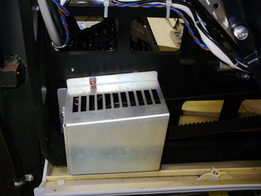
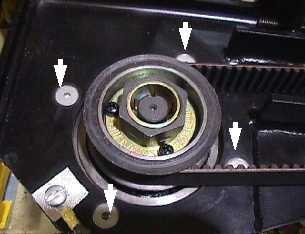

Proprietary to General Electric
Direction 5193575-800, Rev# 5
LightSpeed 7.X Service Information - Adv
Proprietary to General Electric |
| Required Persons | Preliminary Reqs | Procedure | Finalization |
|---|---|---|---|
| 2 | Timing Not Applicable | 2.5 hours | 1 hour |
This procedure defines the steps necessary to replace the axial drive motor.
| Last Revised: | October 13, 2008 |
| Item | Qty | Effectivity | Part# | Manufacturer | |
|---|---|---|---|---|---|
| Chain Hoist | 1 | - | 5149069 (or equivalent) | - | |
| Flexible lifting strap (See Tool Depot list) | 1 | - | 46-251864P1 (or similar strap) | - | |
| Standard FE Tool Kit | 1 | - | - | - | |
| 7/32 inch hex wrench and socket drive hex bit | 1 | - | - | - | |
| FE Torque Wrench kit | 1 | - | - | - | |
| Tube hoist assembly (supplied with system) | 1 | - | - | - | |
| 10 mm hex bit socket drive (supplied with system) | 1 | - | - | - | |
| Item | Qty | Effectivity | Part# | Manufacturer |
|---|---|---|---|---|
| Tie-wraps | - | - | - | |
| Hand towels and cleaners, for cleanup | - | - | - |
| Item | Qty | Effectivity | Part# | Manufacturer | |
|---|---|---|---|---|---|
| Axial Drive Motor Assembly | 1 | - | 2235342-3 | - | |
| ELECTROCUTION HAZARD | |
| HIGH VOLTAGES PRESENT. | |
| Use proper lockout/tagout procedures before replacing components. See safety menu of Service Document gui for appropriate procedures. |
| HEAVY OBJECT | |
| MOTOR ASSEMBLY IS IN AN AWKWARD LOCATION WHILE REMOVING/INSTALLING. MOTOR ASSEMBLY CAN SHIFT WHEN REMOVING MOUNTING HARDWARE. | |
| Make sure the motor is supported with a hoist per procedure. |
| Follow ALL required safety and PPE procedures customary for your organization when working on this product. | |
| Condition | Reference | Eff |
|---|---|---|
Only trained service personnel should service the GE CT Scanner. | - | - |
Move table to the home position.
Remove gantry right side cover.
Refer to Replacement → Gantry → Enclosure → (Cover Removal Procedures).
Turn OFF the Axial Drive and HVDC switches on the gantry’s Service Switch Panel.
Rotate the gantry to place the tube at the 6 o'clock position for easier access to the drive motor assembly.
Turn OFF the 120 VAC switch on the gantry’s Service Switch Panel.
| ELECTROCUTION HAZARD | |
| HIGH VOLTAGES PRESENT. | |
| Use proper lockout/tagout procedures before replacing components. See safety menu of Service Document gui for appropriate procedures. |
Remove power from the Gantry using LOTO procedures.
Remove the gantry left side cover, top covers and front and rear covers.
Loosen the two front screws and remove the two rear screws of the gantry tilting bottom cover to allow removal of slipring cover and drive pulley cover.
Engage the rotating assembly indexer lock to prevent gantry rotation during this procedure.
| Be careful when removing the slip ring cover. You may need to loosen the tilting base cover to aid in removal of the slip ring cover. Slip Ring transmitter ring damage could occur if the cover is scraped on the ring surface. | |
Remove the Lower slip ring cover by loosening the captive screws.
Remove the tilting gantry safety cover next to the Axial drive motor assembly (5 screws using 5 mm hex wrench).
Remove the Axial Drive Module, refer to Axial Drive Module Replacement, for details.
Remove the Holding brake assembly, refer to Axial Drive Holding Brake replacement for details.
Remove the Drive Gear cover.
Illustration 1: Gear Cover

Loosen the axial drive belt using the 2 steps below. Refer to Illustration 2.
Using a 10 mm hex key, or hex bit socket, loosen the two mounting screws on the plate.
Using a 6 mm hex key, or hex bit socket with a 12 inch extension, fully loosen the elongated hex screw to loosen the drive belt.
Illustration 2: Threaded Rod and 2 mounting screws

Remove the drive belt from the drive gear. Take care to not disturb the teeth engagement along the rotating assembly.
Assemble the gantry tube hoist frame and install hoist. Use a strap on the hoist wrapped around the motor to support the motor.
| HEAVY OBJECT | |
| MOTOR ASSEMBLY IS IN AN AWKWARD LOCATION WHILE REMOVING/INSTALLING. MOTOR ASSEMBLY CAN SHIFT WHEN REMOVING MOUNTING HARDWARE. | |
| Make sure the motor is supported with a hoist. |
Remove four (4) hex screws (using a 7/32 inch hex bit socket) mounting the mounting to the gantry frame and 4 nuts mounting the motor to the axial drive plate to release motor. See Illustration 3 and Illustration 4.
| NOTE: | Screws may be very tight, be careful when initially loosening motor mount screws. |
Illustration 3: Axial motor mounts

Illustration 4: Removing the four (4) hex screws will release motor

| Heavy Object. | |
| Motor is Heavy. | |
| Exercise Care, When Replacing the Motor. Make Certain to Support the Motor with a Hoist. |
Replace motor and secure the new one in place.
Install the nuts and lock washers to mount the motor to the axial drive plate. See Illustration 3. Tighten nuts.
Install the 4 screws (7/32 inch hex) to mount the motor to the gantry frame. If the screws that were removed have Loctite on them, clean the screws and reapply Loctite 242. For all others, set the torque on the four hex screws to the values in Table 1.
Table 1: 6 mm bolt torque
| 54 N-m | 40 lb-ft | 480 lb-in | 553 kg-cm |
Install the holding brake using the Axial Drive Holding Brake replacement instructions.
Install the Axial Drive module and connect cabling. Reference Axial Drive Module Replacement..
Install the drive belt on the drive gear. Reference Illustration 4 showing belt on drive gear.
Disengage the rotating assembly indexer lock to allow gantry rotation.
Tension the belt per the CT Belt Tension Check and Adjustment.
Install the drive gear cover, see Illustration 1.
Install the slip ring bottom safety cover using the captive fasteners on the cover. Tighten the screws for the tilting assembly bottom cover if previously loosened when removing slip ring cover.
Install the tilting gantry safety cover next to the Axial drive motor assembly (5 screws using 5 mm hex wrench).
Re-attach the gantry tilting bottom cover.
Refer to Replacement → Gantry → Enclosure → (Cover Removal Procedures).
Install the gantry front, rear, top and left side covers.
Enable 120 VAC HVDC and Axial Drive service switches from the service switch panel. Press the table drives enable button on the lower right corner of the service switch panel.
Install the gantry right side cover.
Perform a [Fastcal] from the [Daily Prep] button of the scan display.
Perform a [System Scanning Test] from the [Functional Checks] menu of the service manual to ensure system operation.